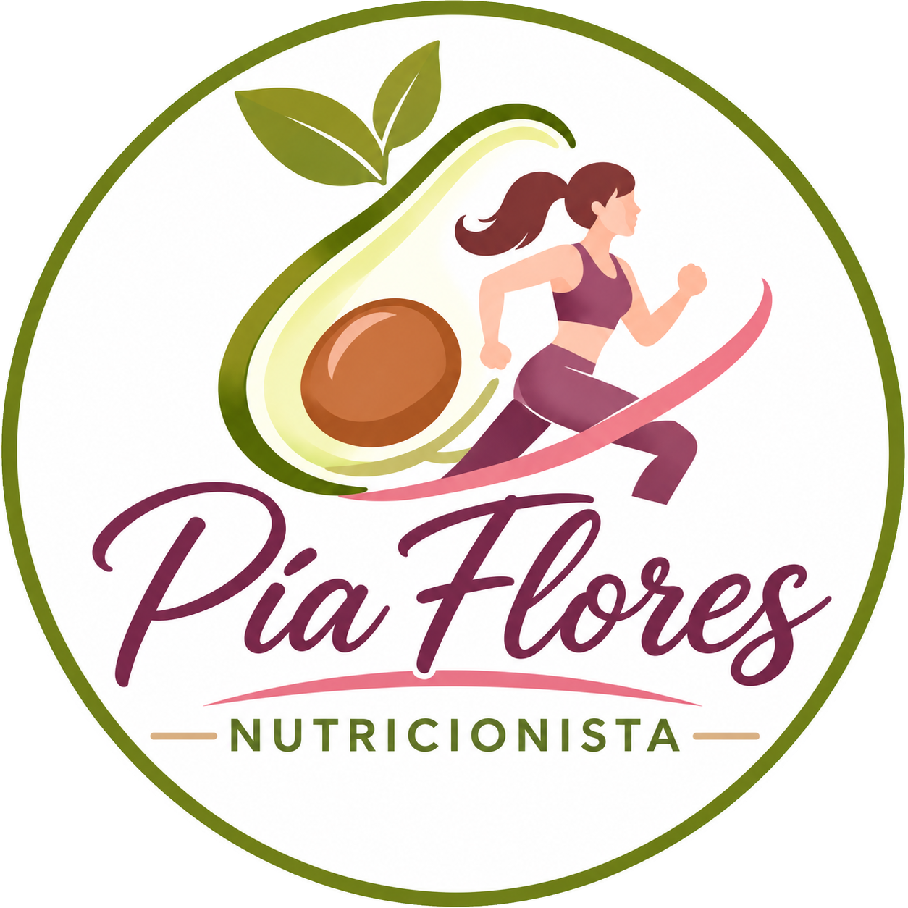

01
DESDE DONDE ESTÉS
Atención online
Recibe orientación nutricional desde la comodidad de tu espacio, con una atención cercana y personalizada.
Consultar disponibilidad ↗
Pía Flores NUTRICIONISTAOrientación nutricional personalizada, con atención online y a domicilio. Un espacio para avanzar con objetivos realistas, información clara y acompañamiento profesional.
Tu alimentación no tiene que ser perfecta para empezar a hacerte bien.
UN PASO A LA VEZPÍA FLORES · NUTRICIONISTA
Soy Pía Flores, nutricionista titulada de la Universidad Andrés Bello, con mención en Gestión y Calidad.
Mi formación integra nutrición y dietética con estudios complementarios en antropometría, psicología y nutrición, alimentación vegetariana y vegana, obesidad y salud metabólica.
Quiero ofrecerte un acompañamiento profesional y cercano, que considere tus necesidades, tus hábitos y tu realidad. Porque cuidar tu alimentación también puede ser un proceso amable y sostenible.
Conversemos sobre tu objetivo →
A TU RITMO Y DESDE DONDE ESTÉS
Dos modalidades para acercar la atención nutricional a tu día a día.
DESDE DONDE ESTÉS
Recibe orientación nutricional desde la comodidad de tu espacio, con una atención cercana y personalizada.
Consultar disponibilidad ↗EN LA COMODIDAD DE TU HOGAR
Coordina una atención presencial en tu hogar. La cobertura y disponibilidad se confirman directamente al solicitar tu hora.
Consultar cobertura ↗CONOCIMIENTO EN CONSTANTE ACTUALIZACIÓN
Estos son algunos de los antecedentes académicos y formativos incluidos en mi currículum.
Nutrición y Dietética, mención en Gestión y Calidad.
Viña del Mar, ChileAntropometrista.
The International Society for the Advancement of KinanthropometryCertificación en Alimentación Vegetariana y Vegana.
Certificación en Psicología y Nutrición.
Certificación en obesidad, cirugía de la obesidad y enfermedades metabólicas.
Instituto Universitario Vive Sano · BrasilSociedad Chilena de Cirugía Bariátrica y Metabólica.
Pequeños cambios, elegidos con intención, pueden abrir espacio a una relación más consciente con la alimentación.
PÍA FLORES · NUTRICIONISTAANTES DE AGENDAR
Escríbeme directamente por WhatsApp. Cuéntame qué modalidad prefieres y coordinaremos la disponibilidad.
Sí. Puedes consultar por atención nutricional online y coordinar los detalles por WhatsApp.
La cobertura se confirma según tu ubicación y la disponibilidad de agenda. Escríbeme para consultar.
Por supuesto. Puedes enviar tus preguntas por WhatsApp antes de decidir la modalidad de atención.
TU PRÓXIMO PASO COMIENZA AQUÍ
Escríbeme y coordinemos una atención nutricional online o a domicilio.
Agendar por WhatsApp +56 9 4527 5049